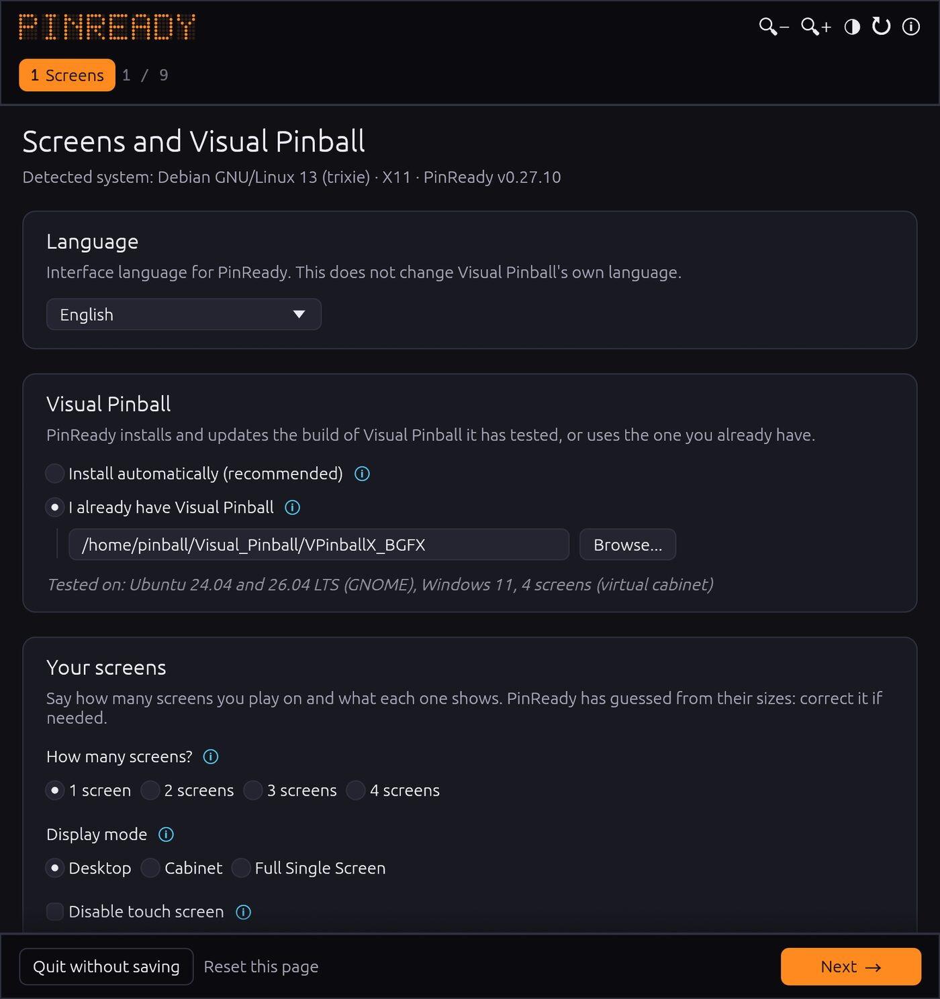

Мастер настройки
При первом запуске PinReady мастер проведёт вас по девяти страницам. У каждой настройки есть маленький значок с подсказкой: наведите на него курсор (или нажмите на него в кабинете), чтобы прочитать объяснение простым языком.
Ваши ответы записываются в VPinballX.ini — файл настроек Visual Pinball, — а комментарии в этом файле сохраняются. Если файла ещё нет, PinReady сначала просит Visual Pinball создать полный файл по умолчанию, а затем добавляет в него ваш выбор. Мастер можно открыть снова в любой момент кнопкой Конфигурация в лаунчере или командой pinready --config: в каждом поле показаны ваши текущие настройки. Большинство настроек можно менять и во время игры — в меню Visual Pinball по клавише F12.
Сбросить конфигурацию удаляет все ответы, откладывает глобальный VPinballX.ini в сторону под именем VPinballX.ini.reset-backup и начинает заново с первой страницы. Ваши столы остаются нетронутыми.
1. Экраны

На первой странице показана обнаруженная система (например, Ubuntu 24.04 LTS · X11 · GNOME), чтобы в сообщениях об ошибках всегда был контекст; здесь же выбирается язык интерфейса и, при необходимости, устанавливается Visual Pinball.
- Количество экранов: 1 для обычного компьютера, 3 или 4 для полноценного pincab (playfield, backglass, DMD и необязательный topper).
- Роли: каждый дисплей показан с названием, разрешением, частотой обновления (Гц) и физическим размером. PinReady предлагает роль по размеру экрана: самый большой становится playfield, затем идут backglass, DMD и topper. Любую роль можно изменить в списке или установить для экрана значение Не используется.
- Режим отображения: Рабочий стол (в окне, для обычного компьютера), Кабинет (playfield рисуется для экрана, лежащего горизонтально, backglass и DMD — на отдельных экранах) или Один экран целиком (playfield и backglass на одном высоком экране). Когда экранов становится 2 и больше, включается режим «Кабинет», и вы всё равно можете его изменить.
- Внешнее устройство DMD (ZeDMD, PinDMD…): отметьте, если у вас есть физический экран со счётом; Visual Pinball обнаруживает его при запуске стола.
- Отключить сенсорный экран: выключает сенсорную накладку VPX — полезно, если playfield не сенсорный или вы управляете кабинетом удалённо.
- Размеры кабинета: ширина и высота lockbar, наклон playfield, ваш рост и место, где вы стоите. Перетаскивайте маркеры на рисунке или вводите значения; от них зависит правильная перспектива в 3D-виде.
2. Изображение

Настройки графики для playfield. Совет на странице: начните со значений по умолчанию, затем подстройте под свой компьютер.
- Синхронизация: Без синхронизации, Вертикальная синхронизация, Адаптивная синхронизация или Frame pacing (значение Visual Pinball по умолчанию). Для каждого варианта объясняется компромисс между плавностью и задержкой управления.
- Ограничение FPS: по умолчанию Макс. — следует частоте обновления экрана playfield, так что ни один кадр не рисуется быстрее, чем экран способен его показать. Нажмите Выбрать число, чтобы задать свой предел. Если ваш экран умеет больше, чем указано на странице, сначала задайте его частоту обновления в настройках дисплея системы (PinReady не может её изменить), а затем вернитесь.
- Сжимать текстуры (включено по умолчанию) упаковывает картинки стола, чтобы занимать меньше видеопамяти; цена — немного более долгая первая загрузка каждого стола.
- Качество изображения: суперсэмплинг, MSAA, постобработка для сглаживания (FXAA и другие), резкость, отражения и максимальный размер текстур.
- Показывать FPS (включено по умолчанию) выводит в игре счётчик кадров — удобно проверить настройки сразу после установки.
- Круглый шар (включено по умолчанию) не даёт шару выглядеть слегка яйцевидным при быстром движении. Это чисто косметическая настройка.
- Визуальные эффекты: мягкие тени (ambient occlusion), свечение вокруг ярких ламп, размытие движения шара, более чёткие текстуры под углом, отражения всего стола, заранее отрисованные кадры и плавность шара и рамп. Для каждого эффекта указано рекомендуемое значение; если игра подтормаживает, сначала отключите эффекты в конце списка.
3. 3D

Два необязательных блока, оба по умолчанию выключены, потому что кабинету они не нужны.
- Виртуальная реальность (VR): игра в шлеме. Нужны шлем и программа VR (среда OpenXR, например SteamVR или Monado), запущенная на компьютере. После включения вы выбираете, когда запускается VR, частоту обновления шлема, что в это время показывает рабочий стол, и маршрутизацию звука.
- Стереоскопическое 3D: 3D-изображение для 3D-телевизора или очков. После включения вы выбираете формат 3D и настраиваете расстояние между глазами, яркость и насыщенность цвета.
4. Управление

У каждого действия Visual Pinball есть два столбца, Клавиатура и Джойстик, и оба работают одновременно. Нажмите Назначить и нажмите клавишу или кнопку: клавиша заполнит столбец клавиатуры, кнопка джойстика — столбец джойстика. Назначить все автоматически проводит через все действия за один проход. Основные действия (flipper, MagnaSave, старт, кредит, запуск шара…) показаны первыми; дополнительные — в один щелчок. PinReady предупреждает, если клавиша уже занята другим действием.
Платы управления для пинбола. Когда обнаруживается плата Pinscape KL25Z, Pinscape Pico, DudesCab или PinOne, PinReady выбирает подходящий профиль и заполняет столбец джойстика заводской раскладкой кнопок платы; plunger и nudge от акселерометра Visual Pinball затем обрабатывает сам. Выберите Нет, чтобы назначить все кнопки самостоятельно. Обнаруженный геймпад тоже можно использовать для flipper, plunger и nudge.
KL25Z (KL Shield V5.1 / Brain / Rig Master)
| Кнопка | Надпись на плате | Действие VPX |
|---|---|---|
| 0 | START | Start |
| 1 | EXTRA-B | ExtraBall |
| 2 | COIN1 | Credit1 |
| 3 | COIN2 | Credit2 |
| 4 | L BALL | LaunchBall |
| 5 | EXIT | ExitGame |
| 7 | L FLIPP | LeftFlipper + LeftStagedFlipper |
| 8 | R FLIPP | RightFlipper + RightStagedFlipper |
| 9 | L MAGNA | LeftMagna |
| 10 | R MAGNA | RightMagna |
| 11 | FIRE | Lockbar |
| 13 | DOOR | CoinDoor |
| 14 | SERVICE EXIT | Service1 |
| 15 | SERVICE - | Service2 |
| 16 | SERVICE + | Service3 |
| 17 | ENTER | Service4 |
| 19 | VOL- | VolumeDown |
| 20 | VOL+ | VolumeUp |
Pinscape Pico (OpenPinballDevice)
| Кнопка | Надпись на плате | Действие VPX |
|---|---|---|
| 0 | Старт | Start |
| 1 | Выход | ExitGame |
| 2 | Дополнительный шар | ExtraBall |
| 3 | Монета 1 | Credit1 |
| 4 | Монета 2 | Credit2 |
| 5 | Монета 3 | Credit3 |
| 6 | Монета 4 | Credit4 |
| 7 | Запуск шара | LaunchBall |
| 8 | Огонь | Lockbar |
| 9 | Левый flipper | LeftFlipper |
| 10 | Правый flipper | RightFlipper |
| 11 | Верхний левый flipper | LeftStagedFlipper |
| 12 | Верхний правый flipper | RightStagedFlipper |
| 13 | MagnaSave слева | LeftMagna |
| 14 | MagnaSave справа | RightMagna |
| 16 | Slam Tilt | SlamTilt |
| 17 | Дверца монетоприёмника | CoinDoor |
| 18 | Отмена (сервис) | Service1 |
| 19 | Сервис: вниз | Service2 |
| 20 | Сервис: вверх | Service3 |
| 21 | Сервис: ввод | Service4 |
| 22 | Nudge влево | LeftNudge |
| 23 | Nudge вперёд | CenterNudge |
| 24 | Nudge вправо | RightNudge |
| 25 | Громкость + | VolumeUp |
| 26 | Громкость − | VolumeDown |
DudesCab (Arnoz)
| Кнопка | Надпись на плате | Действие VPX |
|---|---|---|
| 0 | Старт | Start |
| 1 | ExtraBall | ExtraBall |
| 2 | Coin1 | Credit1 |
| 3 | Coin2 | Credit2 |
| 4 | LaunchBall | LaunchBall |
| 5 | Return | ExitGame |
| 7 | Flipper Left | LeftFlipper + LeftStagedFlipper |
| 8 | Flipper Right | RightFlipper + RightStagedFlipper |
| 9 | Magna Left | LeftMagna |
| 10 | Magna Right | RightMagna |
| 12 | Огонь | Lockbar |
| 13 | Door | CoinDoor |
| 14 | ROM Exit | Service1 |
| 15 | ROM - | Service2 |
| 16 | ROM + | Service3 |
| 17 | ROM Enter | Service4 |
| 18 | VOL - | VolumeDown |
| 19 | VOL + | VolumeUp |
CSD PinOne
| Кнопка | Надпись на плате | Действие VPX |
|---|---|---|
| 0 | VPX 1 | RightFlipper |
| 1 | VPX 2 | RightMagna |
| 2 | VPX 3 | LeftFlipper |
| 3 | VPX 4 | LeftMagna |
| 4 | VPX 5 | ExtraBall |
| 5 | VPX 6 | Start |
| 6 | VPX 7 | Credit1 |
| 7 | VPX 8 | ExitGame |
| 8 | VPX 9 | Lockbar |
| 15 | VPX 16 | VolumeUp |
| 16 | VPX 17 | VolumeDown |
| 17 | VPX 18 | CoinDoor |
| 18 | VPX 19 | Service1 |
| 19 | VPX 20 | Service2 |
| 20 | VPX 21 | Service3 |
| 21 | VPX 22 | Service4 |
| 23 | VPX 24 | LaunchBall |
Номера кнопок — те, что сообщает SDL, отсчёт идёт с 0. Кнопки, которые профиль оставляет неназначенными, в списке не показаны.
5. Аксессуары

Эффекты DOF (свет и игрушки)
VPX 10.8.1 standalone включает DOF (Direct Output Framework), который управляет соленоидами, лампами, мотором-шейкером, knocker или маяком в кабинете. Ему нужна только конфигурация, описывающая ваше оборудование. Страница проведёт вас по шагам:
- Создайте бесплатную учётную запись на VPUniverse ConfigTool.
- Создайте стол, соответствующий вашему кабинету, добавьте его систему вывода (Pinscape, LedWiz, PinOne, DudesCab, PacLed, TeensyStripController…) и подключите свои устройства к выходам.
- Нажмите Generate, скачайте zip-архив и распакуйте его в целевую папку: кнопка Открыть папку в файловом менеджере приведёт вас туда.
- Включите DOF: Visual Pinball поставляется с отключёнными плагинами, поэтому в игре ничего не сработает, пока вы этого не сделаете.
PinReady также может найти вашу плату вывода по USB и подсказать, какой тип контроллера выбрать в ConfigTool. В Linux он показывает, копирует или устанавливает правила udev, дающие доступ к плате. Тестер выходов, поочерёдно подающий импульсы на каждый выход со встроенной аварийной остановкой, пока работает только на симуляторе.
Head tracking
Для кабинетов с Kinect или камерой на backglass или topper: перспектива стола следует за вашей головой. Один щелчок скачивает плагин head tracking и его демо, включает плагин, переключает Visual Pinball в нужный режим просмотра Окно и открывает демо, где можно установить драйверы камеры и убедиться, что вас отслеживают. Недоступно на Mac с процессором Intel.
6. Tilt / Nudge


Настройки акселерометра, который определяет, когда вы встряхиваете (nudge) кабинет.
- Тип датчика nudge: Игровой контроллер — для стика геймпада, Датчик намерения — для кабинетов с платой акселерометра, например Pinscape или DudesCab (игнорирует мелкие вибрации и превращает настоящий толчок в nudge), Датчик кабинета — для быстрого и чистого датчика, показания которого применяются как есть.
- Сила: насколько сильно встряска толкает шар. На практике — единственная настройка, которую стоит подбирать.
- Мёртвая зона: крошечные значения ниже этого уровня игнорируются, чтобы вибрации и шум датчика не двигали шар.
- Диапазон акселерометра: это свойство вашей платы, а не предпочтение. PinReady считывает его с платы, если плата его сообщает, и предупреждает, если выбранное значение не совпадает.
- Порог TILT: насколько сильно можно сделать nudge, прежде чем игра засчитает tilt.
Встряхните кабинет и следите за наглядным отображением: точка показывает каждую встряску на фоне колец для мёртвой зоны, порога nudge и tilt; пересечение красного кольца означает TILT. PinReady также запоминает измеренный пик, сообщает, когда угол tilt недоступен для датчика, и просит проверить, как установлена плата: плата, повёрнутая не той стороной, меняет местами или зеркально отражает направления nudge.
Страница имитирует то, что Visual Pinball делает с каждым nudge, с собственной моделью кабинета и значениями по умолчанию VPX. Синяя точка показывает виртуальный маятник: VPX делает tilt по маятнику, который складывает серию ударов, а красная точка — это лишь датчик. Маятник касается круга tilt ровно тогда, когда VPX сделал бы tilt. Чтобы попробовать, раскачивайте кабинет вбок серией сильных шлепков, каждый чуть сильнее предыдущего.
Как VPX считывает nudge
- В стороны чувствительнее, чем вперёд-назад. VPX умножает боковое значение на 4/3, а толчок вбок обычно сделать легче, чем вперёд.
- Толчок засчитывается, оттягивание — никогда. VPX ищет намерение толкнуть кабинет от себя. Всё, что направлено к вам, обнуляется, как бы сильно оно ни было, поэтому возврат кабинета после вашего толчка никогда не считается вторым nudge: он просто успокаивается. Страница рисует эту зону в сторону игрока.
- Удар регистрируется только выше порога (1 м/с²). Тогда VPX формирует короткий толчок длительностью 25 мс такой же силы, как измеренный пик; сырые показания датчика после этого не используются.
- Серия ударов складывается в маятнике, поэтому четыре шлепка подряд могут вызвать tilt, которого не вызвал бы ни один из них по отдельности.
Математика под капотом
Страница показывает формулы, которые вычисляет VPX, по одному блоку на каждый тип датчика (выбранный тип раскрыт), затем модель кабинета и отвес, общие для всех. Единицы: м/с² для ускорений, мс для времени, ° для угла tilt. Блоки находятся в самом приложении, на странице Nudge & tilt.
7. Звук

Visual Pinball воспроизводит звук на двух устройствах, и PinReady перечисляет ваши звуковые карты для каждого из них:
- Backglass: музыка, голоса и общие звуки игры.
- Playfield: механические звуки (flipper, бамперы, катящийся шар). Для окружающего звука или SSF это должен быть многоканальный выход.
Режим вывода playfield. PinReady заранее выбирает режим по числу обнаруженных каналов и показывает схему расположения динамиков с нужным подключением.
| Режим | Для |
|---|---|
| 2 кан. — Фронтальное стерео | Обычное стерео, оба динамика спереди кабинета. |
| 2 кан. — Тыловое стерео (lockbar) | Обычное стерео, оба динамика у lockbar, рядом с игроком. |
| 5.1 — Тыловые у lockbar | Добавляет позиционирование спереди назад; тыловые каналы у lockbar. Нужна 6-канальная звуковая карта. |
| 5.1 — Фронтальные у lockbar | То же, но фронтальные каналы у lockbar. Выберите вариант, соответствующий вашему подключению. |
| SSF — боковые и тыловые у lockbar (старый) | Surround Sound Feedback со старым микшированием. |
| SSF — боковые и тыловые у lockbar (новый) | Surround Sound Feedback с новым микшированием, рекомендуется. |
Подключение для звуковой карты 7.1 — рекомендуемая схема SSF (цвета разъёмов у разных карт могут отличаться):
| Разъём | Каналы | Подключение в кабинете |
|---|---|---|
| Зелёный (Front) | FL / FR | Динамики backglass (музыка) или система 2.1 |
| Чёрный (Rear) | BL / BR | Верхние exciter playfield (сторона backglass) |
| Серый (Side) | SL / SR | Нижние exciter playfield (сторона lockbar / игрока) |
| Оранжевый (Center/Sub) | FC / LFE | Сабвуфер или bass shaker (необязательно) |
Громкость и тесты. Задайте громкость музыки и playfield, затем проверьте подключение: тест 1 зацикливает музыку на backglass с балансом лево/право; тест 2 по очереди воспроизводит звук на каждом динамике playfield и прокатывает звук шара сверху вниз и слева направо. Если шар движется не в ту сторону спереди назад, измените режим вывода; если слева направо — проверьте подключение. Звуковую карту всего с 3 разъёмами (зелёный, розовый, синий) часто можно переключить на 5.1 или 7.1: см. руководства для Linux, Windows, macOS.
8. Столы

Выберите папку, в которой лежат ваши столы, по одной подпапке на стол: так устроено хранение в Visual Pinball 10.8.1.
Tables/
└── Table Name/
├── Table Name.vpx table file (required)
├── Table Name.directb2s backglass (optional)
├── Table Name.ini per-table settings (optional)
├── Table Name.vbs script patch (optional)
├── medias/launcher.png launcher picture (optional)
├── pinmame/roms/<rom>.zip ROM (required for ROM tables)
├── altsound/<rom>/ alt-sound pack (optional)
├── pupvideos/<rom>/ PinUP Player videos (optional)
├── serum/<rom>/<rom>.crz Serum colorization (optional)
└── vni/<rom>/<rom>.vni VNI colorization, with .pal (optional)Поддерживается раскраска DMD в форматах Serum (.crz) и VNI (.vni + .pal); проприетарные форматы, такие как .pac, не поддерживаются.
- Приведите свою коллекцию к новой структуре. Укажите PinReady одну папку (коллекцию столов, старую установку VPX или даже целый диск). Он проиндексирует всё внутри, а затем создаст для каждого стола отдельную папку с его ROM, backglass, пакетом PUP, alt-sound, раскраской и музыкой. Если у ваших столов уже есть по папке, они остаются на месте, а недостающие файлы добавляются. Сначала выполните пробный прогон, чтобы посмотреть результат, затем выберите копирование (безопасно) или перемещение файлов.
- Совместимость с Visual Pinball Standalone (по умолчанию выключено): PinReady распознаёт скрипт, встроенный в каждый стол, и, если в Le-Syl21/vpx-standalone-scripts есть для него патч, кладёт исправленный
.vbsрядом с.vpx. Ваш собственный.vbsсохраняется как<table>.pre_standalone.vbs. - Обогащение каталога (по умолчанию включено): сопоставляет каждый стол с Virtual Pinball Spreadsheet и загружает картинку backglass и звуковую заставку из VPinMediaDB в папку
mediasстола. Первая синхронизация загружает около 7 МБ данных каталога плюс несколько МБ на каждый найденный стол. На автономном кабинете без интернета отключите её.
9. Система

Необязательные удобства, лучше всего подходящие для выделенного кабинета:
- Запускать PinReady автоматически при старте системы.
- Ярлыки в меню и ассоциация файлов
.vpx: добавляет PinReady и Visual Pinball в меню приложений (GNOME, KDE или XFCE на Linux, Launchpad на macOS, меню «Пуск» в Windows) и открывает файлы.vpxчерез Visual Pinball. Снимите флажок и снова завершите мастер, чтобы удалить это. - Ярлык на рабочем столе и, в GNOME, закрепление на панели (dock).
- Собственное зеркало: загружать патчи скриптов и базу данных медиа с вашего собственного сервера вместо GitHub.